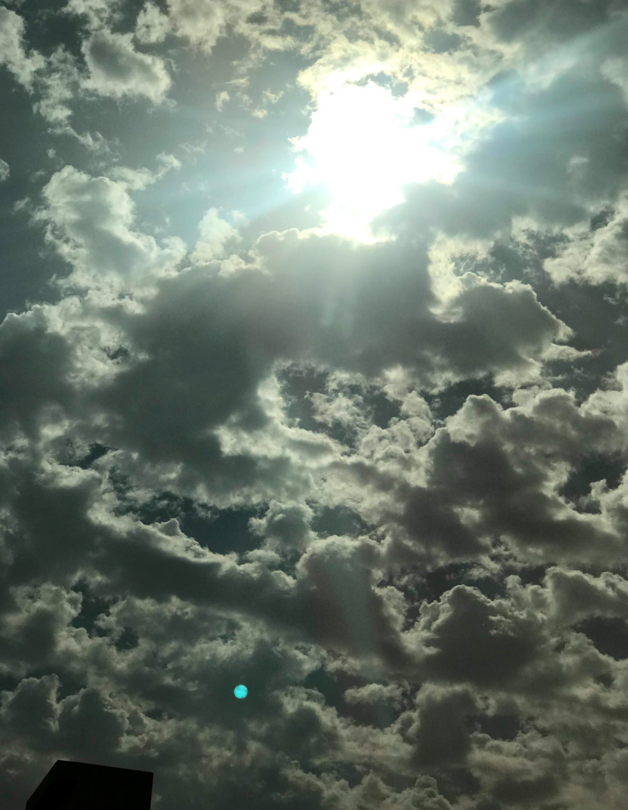
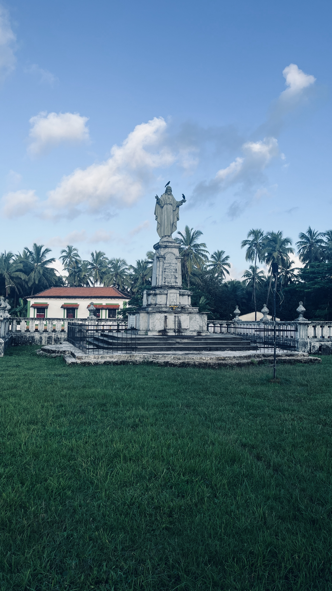
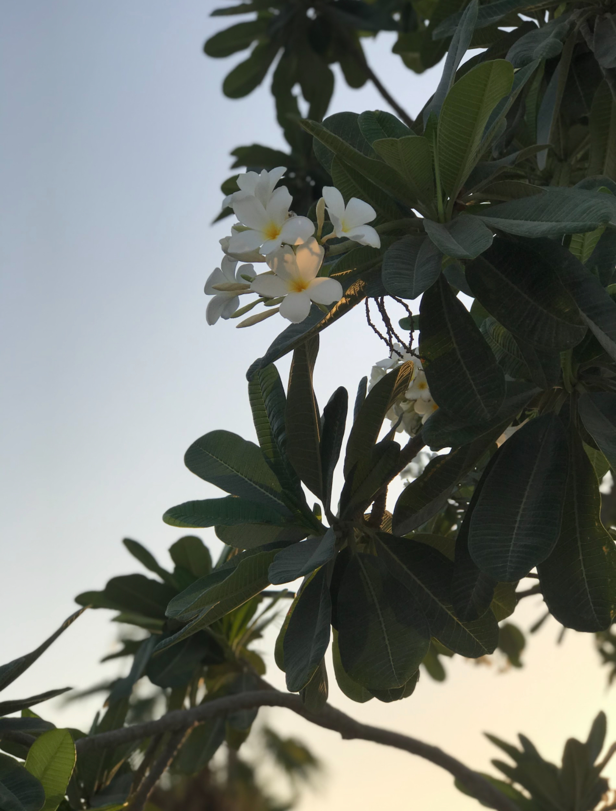

PHOTOGRAPHY
Photography has been my hobby, an escape mechanism from reality for the
longest time. Once I have my phone I click away at everything I see and
some of the things I've pictured commonly are Clouds or the Sky,
Architecture, Flowers or nature and Scenery. Every picture I click is a
memory of my emotions attached to that place at that moment.



